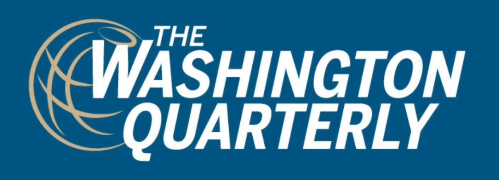

收录于合集

作品简介
【作者】 麦艾文（Evan S. Medeiros），乔治敦大学外交学院亚洲研究的彭纳家族主席，曾任美国国家安全委员会亚洲高级主任（2013-2015），是奥巴马政府亚洲再平衡战略的关键缔造者。麦艾文是美国兰德公司学者出身，研究领域主要有东亚国际政治、中国外交和国家安全政策、中美关系。
【编译】 刘颖哲（国政学人编译员，对外经济贸易大学国际关系学院）
【校对】 吕紫烟
【审核】 邵 良
【排版】 高 鹏
【来源】 Evan S. Medeiros, The Changing Fundamentals of U.S. China Relations, the Washington Quarterly , Vol. 42, No. 3, 2019, pp. 93-119.

期刊简介

美国华盛顿季刊（ The Washington Quarterly ）是国际事务的季刊杂志，由艾略特国际事务学院（乔治华盛顿大学）和泰勒弗朗西斯集团共同承办，分析全球战略变化和公共政策的影响等。该季刊主要内容包括：新兴大国、导弹防御系统、大规模杀伤性武器等，从全球视角来减少恐怖主义、地区问题。2018年影响因子为1.000。
麦艾文：中美关系的基本原则正在变化
The Changing Fundamentals of US-China Relations
Evan S. Medeiros
内容摘要
作者认为中美关系可能已经到了一个关键的转折点，由此提出了一些有关两国关系发展历程及前景的根本性问题：当前紧张局势的根源是什么？哪些会持续，哪些会因两国国内的政治和（或）经济变化而改变？这在多大程度上取决于中美现任领导人的决定？中美关系在未来可能有怎样的轨迹，美国应该如何应对？
为了解决上述问题，本文考察了中美关系核心的变化动态。随着中美关系进入第五个十年，中国正崛起为全球大国，中美关系的许多驱动因素正在演变，并朝着更具竞争力的方向发展。 简而言之，反感、不信任、竞争和波动对中美关系来说并不新鲜，但两国在其中的相对角色一直在改变。
本文考察了两个基本问题，一是加剧竞争的驱动与加速因素，二是抑制竞争的缓冲与稳定因素。 本文前两部分将驱动因素与加速因素分为结构性的和周期性的，以更好地理解其来源、表现和影响。第三部分概述了缓冲与稳定因素的无常性。最后为决策者提供了一些综合注意事项。
文章导读
01
结构性竞争 Structural Competition
本文的假定前提为当今中美竞争与过去有着质的不同。其产生根源是双方正在发展的长期结构性驱动因素。 至少从2000年代中后期开始，竞争至上已经成为中美关系的核心特征，而非随着两国的政治和经济周期而变化的可变特征。
1.1亚洲的崛起
在中国崛起的同时，亚洲对美国和世界的长期重要性也在日益提高。二十个增长最快的经济体有一半在亚洲，占全球GDP的40%；世界人口的60%生活在亚洲；世界十大常备军中有七个亚洲国家，八个已宣布拥有核武器的国家有六个来自亚洲。美国在亚洲有五个正式盟友，超过35万美军在该地区服役。因此，在二十一世纪，亚洲不再像冷战时期那样只是反映潜在的全球动态，而是成为了动态的设定者。 鉴于亚洲日益增长的重要性，中国的行为对许多美国人来说具有更大的意义。
1.2安全
影响中美关系的第二个主要结构性力量是不断扩大的双边竞争根源，这种竞争涵盖了安全、经济、技术和治理理念。 中美竞争的长期来源（安全和经济）正在深化，同时新的竞争驱动因素（如技术和治理）正在出现。
安全竞争对中美关系来说并不新鲜，但它在中美整体关系中的性质和作用正在发生变化。 过去，中美对不同安全利益的管理策略包括改变行为、修改要求和期望、容忍分歧、应对共同的安全挑战，它们为在传统和非传统安全问题上的合作以及日益增长的经济联系创造了空间。如今局势正朝着新的方向发展。若干事态的发展为安全竞争的加剧和多样化提供了解释。
第一， 对美国来说，中国的军事现代化不仅意味着中美相对能力的总体差距已经缩小，而且限制了美国在西太平洋的军事投射能力，尤其是削弱了美国在亚洲的传统军事优势。中国在新兴国防和商业技术上的大量投资也在进一步强化其军事优势和加剧安全困境。
第二， 作者认为，虽然过去中国勉强容忍美国的联盟活动，但是现在面对可能有损利益的美国盟友（如日本、韩国、菲律宾、澳大利亚）的行动，中国更愿意为其提高成本。
1.3经济
作者提出，在中国当前的经济决策背景下，有许多结构性力量和相关政策选择正在加剧双边经济竞争。 首先，随着中国经济实现再平衡并专注于创新驱动力增长，双边经济互动在本质上变得更具竞争力。随着中国经济生产附加值更高的商品和服务，中美出口的互补性正在下降。
作者对加剧经济竞争的第二种解释是，中国从2000年代中后期开始，对产业政策进行了更新和推广。中国政府着眼于树立在高科技领域的主导地位，并最终于2015年发布《中国制造2025》(Made in China 2025)。中国的产业政策削弱了外国公司在华经营的实力，也阻碍了它们近年来在第三国市场的发展。
中美经济竞争最令人担忧的新动因也许是一种现象，可以被称为双边经济关系安全化。这指的是经济挑战（新的和旧的）现在已经具有了国家安全特征（即中国的经济做法对美国构成了安全威胁）。
1.4技术
中美的政策制定者和商界领袖都认为自己处于长期的竞争中，力图主导对未来创新至关重要的基础技术，包括半导体、超级计算机、量子计算、自动驾驶车辆、人工智能、机器人技术、5G与下一代通信技术、生物技术与遗传学。 中美决策者都认为，这些技术对创新、生产力和国家安全至关重要，因此将在21世纪控制全球经济。
对许多美国人来说，技术竞争不仅仅是谁将主宰这些关键的高科技领域的问题；也有人担心中国使用技术来做什么。 美国国内就中国利用技术向其他国家推广中国模式展开了更广泛的辩论。 美国的第三个关切是中国如何发展技术。 美国认为，中国以直接补贴公私企业（以及其他重商主义和保护主义政策）的形式使用产业政策，使中国企业在这场技术竞争中占据优势。 第四个担忧是关于技术控制。 越来越多的美国政策制定者、分析师和投资者认为，中国利用了美国法律和监管措施的漏洞来获得高科技进步。他们指出了美国出口管制法和美国外国投资委员会（CFIUS）投资审查程序的弱点。 技术竞争的最后一个驱动力与供应链有关。 许多美国人担心，某些公司（尤其是信息与通信技术领域的公司）的供应链过于依赖中国制造商，从而造成潜在风险。这种担忧促使特朗普政府力图利用关税和其他工具，鼓励美国公司将其供应链移出中国以降低脆弱性。
1.5治理
中美竞争的最后一个新领域是治理理念：全球治理和各国的国内治理方式的选择。公平地说，美国的外交政策正受到自身身份危机的挑战。 特朗普对美国外交政策、盟友、国际机构和多边协议的传统国际主义深表怀疑，因此许多世界领导人已开始减弱对美国作用的重视。
当前的中国更加积极地表达塑造国际秩序的愿望。从2013年开始，中国逐渐扩大在现有机构中的作用，建立新的机构，寻求给现有的区域机构注入新的活力，并着手起草有关网络安全和北极等新兴安全问题的规则。 可以肯定的是，中国能够在阻力和压力中重新校准。 比如在对内改革过程中，积极听取私营企业的意见；在对外开放中，明确承诺采取做法解决一带一路倡议现存的弊端（如债务可持续性问题）。
中美关系面临的全球治理核心挑战是，两国都是选择性修正主义者，双方都想改革现存体系，但原因不同，方式也不同。 中国的核心担忧是，当前的二战后体系是在没有中国参与的情况下建立的，尽管它受益于其中的某些属性，但中国对美国在影响其经济和安全利益领域的主导作用感到不满。正如分析师罗伯特·卡根(Robert Kagan)所言，美国外交政策也在不断寻求变化，但并非出于剥夺权利和应得权益，而是由于传教热情、不断发展的全球利益和不断变化的美国能力（尤其是军事能力）的结合。由此产生的关于全球秩序的形态和轮廓的竞争不太可能在短期内改变，因为双方都认为另一方的行动对他们所憧憬的国际体系具有内在的威胁性和不稳定性。
美国的第二个担忧是，它认为中国努力在海外推广其发展偏好。 一些美国学者反驳称，中国的做法与其说是传播模式，不如说是验证中国自身的经验，让中国的治理选择与西方民主国家一样合法。尽管如此，特朗普政府、部分民主及共和党领袖以及越来越多的美国学者和分析师认为这是一场新兴的全球思想竞争。
1.6变化的时限
正如戴维·埃德尔斯坦(David Edelstein)所指出的那样，对中美两国决策者来说，时限（识别和应对来自一个大国的潜在威胁所需的时间）已经发生了变化。两国当前都不认为自己有时间调整来应对对方构成的威胁，这种相互认知已促使双方从对冲战略转向更明确的竞争战略。
至少在中美关系正常化后的头三十年里，大多数美国政策制定者认为中国对美国构成的挑战是可控的。近年来，美国基本的风险收益计算方式发生了变化，许多美国人对中国的意图和能力持更加负面的看法。 许多人现在认为，美国企业(在知识产权的丧失和市场份额下降方面)和工人(失业)的经济成本远大于经济利益。与此同时，美国在亚洲和全球的安全利益面临的威胁正在增加。
对中国来说，从20世纪80年代初开始，它需要时间来发展经济、实现军事现代化，并积累综合国力。在主要对外关系上采取低调和基本合作的态度有助于实现这些目标。现在中国可能会重新评估对美国的基本战略考量。作者认为中国领导人正从以下几方面进行重新审视：对中国日益积累的经济和军事实力的信心，更加强调经济、技术和军事上的自力更生，渴望在亚洲和全球做得更多，越来越担心美国采取试图遏制甚至破坏中国复兴的行动，相信中国能够承受与美国的紧张和摩擦(特别是考虑到中国的全球联系和形象)，越来越不相信中国能够或者应该如此依赖美国。
总的来说，近年来，中国的声明和行动表明，中国现在不再专注于争取时间，而是更多地利用能力来推进外部利益，尽管还没有引发与美国等其他大国的对抗。
02
周期性驱动因素 Cyclical Drivers
中美竞争还存在一系列的周期性或短期的力量，主要源于特朗普政府政策。这些驱动因素是周期性的，它们源于两国（尤其是美国）的政治和经济周期。 特朗普政府的对华政策与往届政府明显不同，他单纯强调竞争，而削弱合作的作用。首先，特朗普政府建立并依靠领导人之间的私人关系来处理中美关系。这可能是特朗普有意为之，以进一步提升自己的地位和形象。
第二， 特朗普政府让双边关系的主要渠道萎缩。在2017年4月的海湖庄园会晤上建立的四个内阁级对话（涉及经济、外交和安全、网络事务、文化联系）都已经萎缩。中美领导人之间的电话、信件和会议不仅是处理关系的最重要机制，也正成为唯一的沟通渠道。
第三， 特朗普团队缺乏连贯的对华战略和政策。据报道，特朗普的对华政策没有明确的优先事项，也没有制定优先事项的内部程序。
第四， 特朗普政府认为与中国合作没有多大价值，并认为施压是促使中国改变行为的最佳方式。美国退出《巴黎协定》和伊核协议消除了合作的天然平台，白宫对多边组织的普遍蔑视进一步限制了合作机会。很多美国政府官员将对华合作视为示弱和推动中国发展，即使这样做符合双方的利益。
03
缓冲与稳定因素：衰落的救世主？Buffers and Stabilizers: The Fading Saviors?
随着竞争驱动因素的加深、扩大和强化，分析缓冲和稳定因素对评估这种复杂关系的总体轨迹是非常重要的。下面分析了中美关系中的这些力量，它们可以抑制或抵消分歧。 作者对缓冲和稳定因素的评估是，多数当前价值有限，相关性减弱或者不起作用。
3.1缓冲因素的衰落
自1971年中美关系建立以来，两国的政治领导人对中美关系的稳定一直至关重要。 从历史上看，领导人一直是危机管理的关键来源，也是紧张局势升级的防火屏障。 但是领导人也会破坏关系。特朗普对关税的倾向、对华为采取的行动和广泛的贸易需求都加大了通过谈判达成解决方案的难度，并破坏了更广泛关系的稳定。
其次，中美关系可能正在失去其最强大的压舱石之一：经济联系和美国商界。 自美国在2018年夏季首次提高关税以来，双边贸易收缩了约13%。此外，美国商界对双边经济关系的态度从广泛支持和公开谈论，转变为喜忧参半和基本保持沉默（存在一些直言不讳的批评）。然而，作为一种周期性现象，这种情况可能会改变。美国公司对中国市场的看法取决于其在华业务结构，供应链出现大规模转移的预测尚未成为现实。
第三，关于中美关系的核心有一种共同的说法（尤其是在20世纪80年代），即共同的威胁和挑战始终使中美安全利益保持充分一致。 两国当前仍有共同的挑战可以应对，包括全球金融稳定、气候变化、人道主义灾难、全球卫生和流行病以及防核扩散。但是有观点认为，美国和中国在许多问题上有着不同的利益，这些共同威胁很难在双边关系中产生新的约束力。随着竞争来源的增多，剩余双边合作领域将更难弥补竞争因素。
第四个可能衰落的传统稳定因素是核武器。 与冷战时期不同，核武器从未成为中美关系的重点。然而，有观点认为这种情况可能正在改变。美国如果在常规军事优势的竞争中落后，核武器可能在其国防规划中发挥更大的作用。此外，美国退出《中导条约》与朝核问题都可能将核武器以非稳定因素的方式提到中美议程的中心。
3.2稳定力量？
对中美双边关系的缓冲和稳定因素的有效性评估可能不全是消极的。 中美的公众舆论可能是两国关系的稳定力量，但在这个变量可能正处于一个过渡时期。
最后一个潜在的缓冲因素是美国在亚洲的盟友与伙伴的态度，他们担心不得不在中美间选边站，因此可能会寻求缓解紧张局势并减少竞争。 随着特朗普对华政策的演变，一些亚洲领导人站出来公开表达了他们对双方对抗性基调和行动的担忧。新加坡总理和外交部长都强调中美需要理解永久性长期冲突的代价。甚至像澳大利亚这样坚定的美国盟友也感受到了中美摩擦的压力。
04
陷入困境的时代 Troubled Times Ahead
在中美关系的核心，长期结构性驱动因素和短期周期性驱动因素之间存在一种独特而令人担忧的融合。双方都在将这种关系推向更具竞争性的方向，由此产生的竞争涉及更广泛的问题和更多的参与者。与此同时，竞争的传统缓冲和稳定因素被削弱了（如果不是不起作用的话）。这些驱动因素中有许多与两国的身份、物质利益和能力有关，这表明了（但不保证）它们的永恒性。 中美关系似乎进入了一个新的阶段，特点是竞争至上，冲突和对抗的风险增加。
这一发人深省的结论为决策者提供了几点总体考虑。首先，本文所定义的竞争更多是状态而非战略。决策者应更具创造性地思考应对挑战的战略：使用什么工具，在哪些问题上发力，以及付出什么代价。第二，许多分析家谈到要在中美竞合关系中找到平衡，但难度越来越大。中美合作领域会一直存在，但是其是否具有战略价值，能否抵消利益分歧，仍是一个悬而未决的问题。第三，美国未来的战略和政策将需要国内外更高程度的一体化。美国需要在政府、企业和学术界之间进行更多的协调；在国际上，与志同道合的国家（like- minded countries）联盟将最有可能影响中国在经济、安全、技术和治理方面的选择。最后，鉴于结构性竞争的范围，决策者应重新思考美国过去用于处理中美关系的概念的适用性。
译后记
作者麦艾文曾是兰德公司学者，后在奥巴马政府负责制定对华战略，于特朗普上台前辞职。他的观点代表了部分美国“知华派”的战略认知，反映出奥巴马、特朗普两届政府（可能包括未来政府）的对华政策。本文对中美关系进行了全方位的解读，其中许多判断都极具洞见，并在此次疫情中得到印证，如中美双方的成本收益预期发生的变化，两国在全球治理问题上的差异，共同威胁、舆论与其他国家对中美关系的稳定作用。但总体来看，本文在分析上具有较强主观性。
在因素分类上，作者将中国的实力变化与政策选择归为结构性的竞争驱动因素，而将特朗普加剧两国竞争关系的行为归为周期性因素。这是否是为美国自亚太再平衡战略以来的竞争政策的合理性进行辩护？美国对华的负面态度和竞争偏好能否因政党轮替而逆转？在具体问题领域的分析上，作者强调中国模式与政策对美国的威胁，却没有分析中国改革开放的大战略，以及不扩张、不结盟、不干涉内政的负责任态度。这是否是倾向于用零和思维考虑问题？是否主动缩小了两国合作的空间？
作者对中国的发展模式与价值观的偏见代表了许多美国智库学者的看法，他们大多呼吁美国政府采取对华强硬政策。尽管民主党政府更注重在符合双方利益的领域加强合作（近期作者参与了对中美抗疫合作的联名呼吁），但两党上台的区别可能仅在于对华竞争议题的先后次序和对抗方式。正如中国国家领导人指出的那样，当前世界形势严峻复杂，我们要坚持底线思维，做好较长时间应对外部环境变化的思想准备和工作准备。
本文由国政学人独家编译推荐，文章观点不代表本平台观点，转载请联系授权。


好好学习，天天“在看”